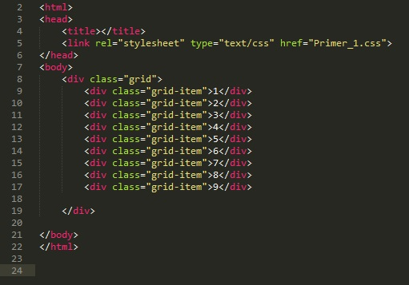
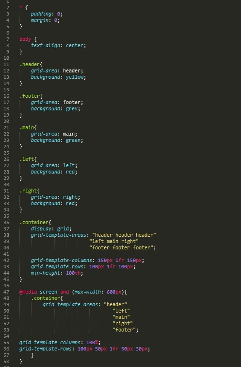

Grid верстка
Для начала разберемся с терминологией:
- Grid-container - элемент на который применяется свойство display: grid. Это родительский элемент всех внутренних элементов нашей сетки.
- Grid-line - линии определяющие направления осей столбцов и строк
- Grid-track - это пространство между двумя смежными грид-линиями
- Grid-cell - пространство между двумя сеседними строками и соседними столбцами (ячейка)
- Grid-area - пространство окруженное четырьмя линиями сетки
Кросбраузерность
Для того что бы гриды корректно отображались в браузерах, необходимо использовать префиксы. Выглядит это так:
display: grid;
display: -ms-grid;
grid-template-columns: 50% 50%;
-ms-grid-columns: 50% 50%;
grid-template-rows: 50% 50%;
-ms-grid-rows: 50% 50%;
Более того в дочерних объектах (блоках) так же надо добавлять код:
-ms-grid-column: 1;
-ms-grid-row: 1;
Что означает этот код? это значит что блок в первой колонке на первой строке
-ms-grid-column: 2;
-ms-grid-row: 1;
Это читается как 2 колонка 1 строка
Так для чего же нужен grid? Это свойство помогает структуировать блоки нашего сайта в двухмерной плоскости. Выравнивать блоки по сетке использую направления столбцов и строк одновременно.
Пример 1
Цель - из девяти блоков создать единый блок который будет состоять из трех строк с тремя столбцами
Рассмотрим следующий код html

Здесь мы в теле страницы поместили родительский блок с классом - grid, в котором находятся 9 блоков div с классом - grid-item
Теперь рассмотрим код файла CSS

Начнем с конца кода. Рассмотрим блок .grid-item
- padding: 5px; - отступ с внутренней стороны 5 пикселей
- background: #000; - черный цвет фона
- color: #fff; - белый цвет текста
- border-radius: 5px; - закругленые углы с радиусом 5 пикселей
- border: 1px solid red; - рамка блоков 1 пиксель сплошная красного цвета
Теперь рассмотрим первый блок где мы и будем использовать Grid.
- display: grid; - устанавливаем тип отображения с помощью атрибута display и указываем значение grid. Теперь с этого момента мы сможем использовать в стилизации нашего элемента функции grid
- grid-template-columns: 200px 1fr 200px; - это свойство определяет столбцы сетки с помощью значений которые мы указываем разделяя пробелами. мы ввели три значения - это говорит о том, что у нас будет три столбца. Теперь немного о самих значениях. Их можно указывать в пикселях, в процентах, а так же в fr. Что это за величина? это величина введенная специально для grid. Означет оно что значение ширины нашего столбца будет расчитано после того как остальные величины ширины столбцов получат свое значение.
- grid-template-rows:100px auto 100px; - по аналогии с предыдущим свойством, с разницей в том что это свойство отвечает за количество строк. Теперь немного об auto - это значение так же расчитывается автоматически, НО! еэто значение будет расчитано только после того как будет расчитано значение fr.
Пример 2
Цель - создать типичный шаблон структуры сайта с разделам header (шапка), content (основная область), menu (в виде двух боковых панелей) и footer (низ сайта)
Рассмотрим сначала html код

Здесь все просто. В блок div (класс container) мы поместили пять разделов (head, main, две боковые menu, и footer)
Приступим к рассмотрению CSS кода.

СТР 1-9 - В этом разделе мы указали отступы внутренние и внешние у установили текст по центру
СТР 11-34 - в этих разделах мы указали:
- grid-area: header; - в свойство grid-area указывается псевдоним, для того что бы в дальнейшем в свойстве grid-template-areas: строить наши строки и колонки
- background: yellow; - мы установили для наглядности каждому блоку свой цвет
СТР 36-45 - в этом разделе мы работаем с основным контейнером
- grid-template-areas: "header header header" - в разделе grid-template-areas: мы и указываем структуру наших area.
- grid-template-columns: 150px 1fr 150px; - здесь мы устанавливаем ширину наших колонок
- grid-template-rows: 100px 1fr 100px; - здесь указываем высоту наших строк
- min-height: 100vh; - здесь мы указываем минимальную высоту нашего контейнера. 1vh - это 1% высоты экрана. указав минимальную высоту блока - весь экран, наш footer автоматически прилип к низу экрана.
СТР 56 - здесь мы создали медиазапрос. Если окно становится меньше 600px, то сайт выстраивается в одну колонку в определенном порядке, так же изменяются высота строк и ширина столбцов